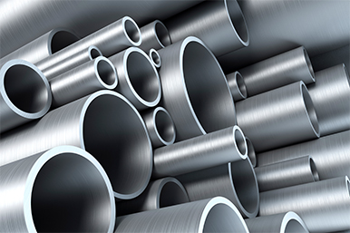
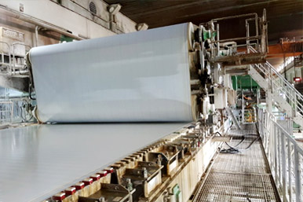
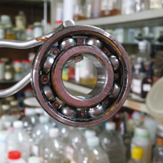

전북 전주 · 수처리 약품 직접 제조
냉각수와 보일러의 슬라임·스케일·부식 걱정을 덜어 드립니다
냉각수용 슬라임 컨트롤제와 보일러 부식억제제를, 1990년부터 세척제를 만들어 온 진웅이 전주 본사·공장에서 직접 만듭니다. 설비 규모와 수질을 알려 주시면 맞는 제품을 안내합니다.
- 1990년 설립진웅화학 상사로 시작
- 전북 전주 본사·공장덕진구 추천로 25-7
- 위생용품 제조업 등록2016년 · 전주시 덕진구 제4호
- 특허 제10-1799268호금속 표면 처리제 (2017)
For buyers
추천받은 업체, 이렇게 확인하고 계신가요?
진웅을 찾아 주신 분들은 대부분 공공기관, 지자체·협회, 중소기업과 대기업에 있는 주변 분의 추천을 받고 오셨습니다. 추천을 받은 뒤에는 직접 확인하고 싶은 것이 생깁니다.
납품받을 세차용품에 어떤 서류가 있는지
안전기준 신고, MSDS(물질안전보건자료), 시험성적서처럼 구매 규정이 요구하는 서류를 먼저 확인하고 싶은 분
추천받은 업체가 믿을 만한 곳인지
회사 주소, 사업자 정보, 지금까지의 연혁을 공개된 정보로 확인하고 싶은 분
정말 직접 만드는 제조사인지
유통만 하는 곳이 아니라 공장을 갖고 제품을 만드는 곳인지 알고 싶은 분
세차 현장에서 실제로 쓰이는 제품인지
관용차·법인차량을 세차하는 현장에 맞는 카샴푸를 찾는 분
What we make
진웅이 만들고 납품하는 것
주식회사 진웅은 세차업과 함께 카샴푸·카케어 화학제품을 제조하고 판매합니다. 공공기관과 기업에는 관용·법인차량용 세차용품으로 납품을 상담합니다.


Products
카샴푸부터 산업용 세척제까지
진웅은 1990년부터 제철·제지·유리·보일러·수처리 현장에서 쓰는 세척제와 약품을 만들어 왔습니다. 산업용 제품 35종을 분류별로 확인하거나 바로 검색해 보세요.
8종

철강 세척제
철 제조·가공 때 생기는 유지성 물질 등 오염물질 제거

제지 약품
FELT 세척, 핏치 분산, 송진 용해, 롤 세척과 오염 방지
박막·강화유리 세척제
박막 강화유리의 지문, 먼지, 유분 세척
보일러계 약품
부식·스케일 방지, 슬러지 분산, 연소 촉진
수처리제
슬라임, 스케일, 부식 장애 방지

기타 제품
베어링·차체 세척제, 플라스틱 세척제·탈취제, 이형제
All 35
전체 제품 보기
35종을 한 번에 검색하고 비교합니다 →
R&D
기술연구
개발 현황과 비교 시험 자료 →

세차장이 직접 만든 카샴푸입니다
주식회사 진웅은 세차업을 함께 합니다. 그래서 만든 제품을 세차 현장에서 먼저 써 봅니다.


Why Jinwoong
현장에서 쓰는 회사가
공장에서 직접 만듭니다
비슷한 세차용품은 많습니다. 진웅이 다른 점은 세차 현장과 제조 공장을 함께 갖고 있다는 것입니다.
세차 현장에서 먼저 검증합니다
세차업을 함께 하기 때문에, 납품하기 전에 우리 세차 현장에서 먼저 씁니다.
전주 본사·공장에서 직접 만듭니다
본사와 공장이 전북 전주시 덕진구 추천로 25-7에 함께 있습니다. 주소와 사업자 정보를 공개합니다.
1990년부터 세척제를 만들어 왔습니다
진웅화학 상사로 시작해 제철·제지 공장에서 쓰는 산업용 세척제를 만들어 온 경험이 카케어 제품의 바탕입니다.
In numbers
기록으로 확인할 수 있는 진웅
1990년
진웅화학 상사 설립
35종
산업용 세척제·약품
(6개 분류)
2곳
산학협력 대학
(전주대학교·호원대학교)
5곳
연혁에 기록된
산업용 세척제 납품처
Evidence
말보다 먼저 보여 드리는 근거
지인의 추천만으로 결정하기 어려우실 때, 아래 정보로 진웅을 직접 확인해 보세요.
사업자사업자등록번호418-81-19349 (주식회사 진웅)
2016위생용품 제조업 등록전주시 덕진구 제4호
2017특허 등록금속 표면 처리제 (제10-1799268호)
2016경영시스템 인증 취득ISO 9001:2015(품질), ISO 14001:2015(환경)
2014~산학협력전주대학교 LINC사업단 산학협력 협약(2014), 호원대학교 산학협력
인증은 취득한 해를 기준으로 적었습니다. 지금도 유효한지, 제품별로 어떤 안전 서류를 갖추었는지는 이메일로 문의해 주세요.
How it works
문의하면 이렇게 진행됩니다
처음 문의하실 때 용도와 필요한 서류를 함께 알려 주시면, 제품과 서류를 한 번에 확인할 수 있습니다.
01
이메일 문의
용도, 필요한 양, 납품 지역을 적어 jinwoong6767@daum.net으로 보내 주세요.
02
필요 서류 확인
구매 규정에서 요구하는 서류 목록을 함께 보내 주시면 제품에 맞춰 확인합니다.
03
제품·서류 안내
용도에 맞는 제품과, 그 제품으로 준비할 수 있는 서류를 안내합니다.
04
납품 협의
수량, 일정, 납품 방법을 협의해 진행합니다.
추천을 받고 오셨다면,
확인할 수 있는 것부터 보여 드립니다
공공기관, 지자체·협회, 중소기업과 대기업에 있는 주변 분의 추천으로 진웅을 찾아 주셨습니다.
Products
제품·작업 갤러리
진웅이 만드는 산업용 세척제와 약품의 제품 설명서입니다. 사진을 누르면 크게 보고 옆으로 넘길 수 있습니다.


01
카샴푸
세차 현장에서 먼저 써 보고 만든 카샴푸입니다.

02
카케어 화학제품
전주 본사·공장에서 직접 만드는 카케어 화학제품입니다.

03
세차 현장에서
진웅의 세차 현장에서 제품을 쓰는 모습입니다.


옆으로 넘겨 보기


진웅 유튜브 채널의 홍보 영상입니다. 채널 바로가기
About
1990년 진웅화학 상사에서 시작한 전주의 화학제품 제조사
진웅은 1990년 '진웅화학 상사'로 시작해 1999년 '진웅화학', 2012년 주식회사 진웅이 되었습니다. 제철·제지 공장에서 쓰는 산업용 세척제를 만들어 왔고, 지금은 세차업과 함께 카샴푸·카케어 화학제품을 만들고 판매합니다.
- 회사명
- 주식회사 진웅
- 소재지
- 전북 전주시 덕진구 추천로 25-7 (팔복동 3가) 본사·공장
- 하는 일
- 세차업, 카샴푸·카케어 화학제품 제조 및 판매
- 사업자번호
- 418-81-19349
FAQ
구매 담당자가 자주 묻는 질문
공공기관에서 세차용품을 납품받으려면 어떤 서류가 필요한가요?
기관마다 구매 규정이 달라 필요한 서류도 다릅니다. 보통 안전기준 신고 여부, MSDS(물질안전보건자료), 시험성적서 같은 서류를 확인합니다. 기관에서 요구하는 서류 목록을 이메일로 보내 주시면, 해당 제품으로 준비할 수 있는 서류를 확인해 답변드립니다.
지인이 추천한 카케어 업체가 믿을 만한지 어떻게 확인하나요?
회사 주소, 사업자등록번호, 연혁처럼 공개된 정보를 먼저 확인해 보세요. 주식회사 진웅은 전북 전주시 덕진구 추천로 25-7에 본사·공장이 있고, 사업자등록번호는 418-81-19349입니다. 제품 서류는 이메일로 요청하실 수 있습니다.
카샴푸 제조사가 정말 직접 만드는지 어떻게 확인하나요?
공장 주소와 제조업 등록 기록을 확인하는 것이 가장 쉽습니다. 진웅은 전주 팔복동에 본사와 공장이 함께 있고, 2016년 위생용품 제조업(전주시 덕진구 제4호)으로 등록했습니다.
국내에서 카샴푸를 직접 제조하는 업체를 찾고 있습니다.
주식회사 진웅은 전북 전주에서 카샴푸와 카케어 화학제품을 직접 만들고 판매합니다. 세차업을 함께 하기 때문에 만든 제품을 세차 현장에서 먼저 써 봅니다.
전북에서 카케어 화학제품을 만드는 회사가 있나요?
네. 주식회사 진웅은 전북 전주시 덕진구 팔복동에 본사·공장이 있는 화학제품 제조사입니다. 1990년 진웅화학 상사로 시작했습니다.
Contact
세차용품 납품 상담,
이메일 한 통으로 시작하세요
용도, 필요한 양, 납품 지역, 구매 규정에서 요구하는 서류 목록을 함께 적어 보내 주시면 확인이 빨라집니다.
- Call
- 063-212-6767 (대표) · 063-260-2302 (영업·제품)
- Hours
- 평일 09:30 ~ 18:00
- Address
- 전북 전주시 덕진구 추천로 25-7 (팔복동 3가)